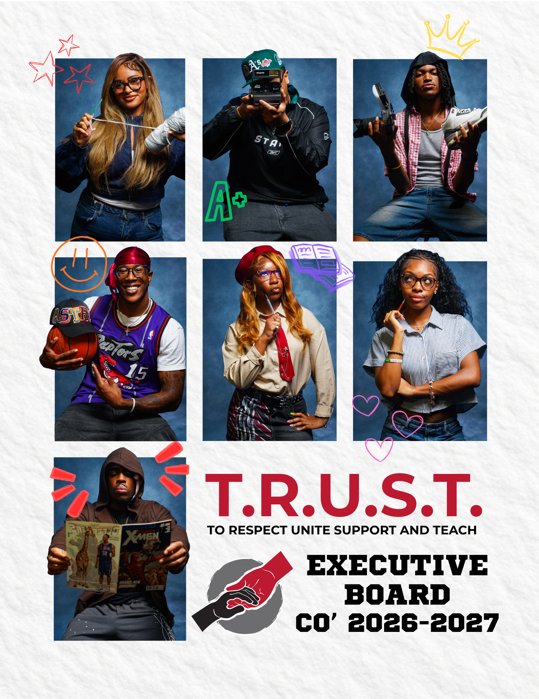

Graphic design is another way I express my creativity. I have worked on flyers, social media graphics, event promotions, and other designs for personal projects and other organizations I am involved in.
When creating these designs, I think about multiple elements like color, typography, layout, hierarchy, etc. All these elements help communicate information while also allowing me to craft a final design that is visually appealing for the intended audience but with my own taste as well.
Graphic design also works in tandum with my video work as I use it to create thumbnails and other promotional graphics.
| Program | Purpose | Type of Content |
|---|---|---|
| Adobe Premiere Pro | Video Editing | YouTube/Social Media Videos |
| Adobe Photoshop | Graphic Design | Flyers/Graphics |
| Canva | Graphic Design | Promotional Content |